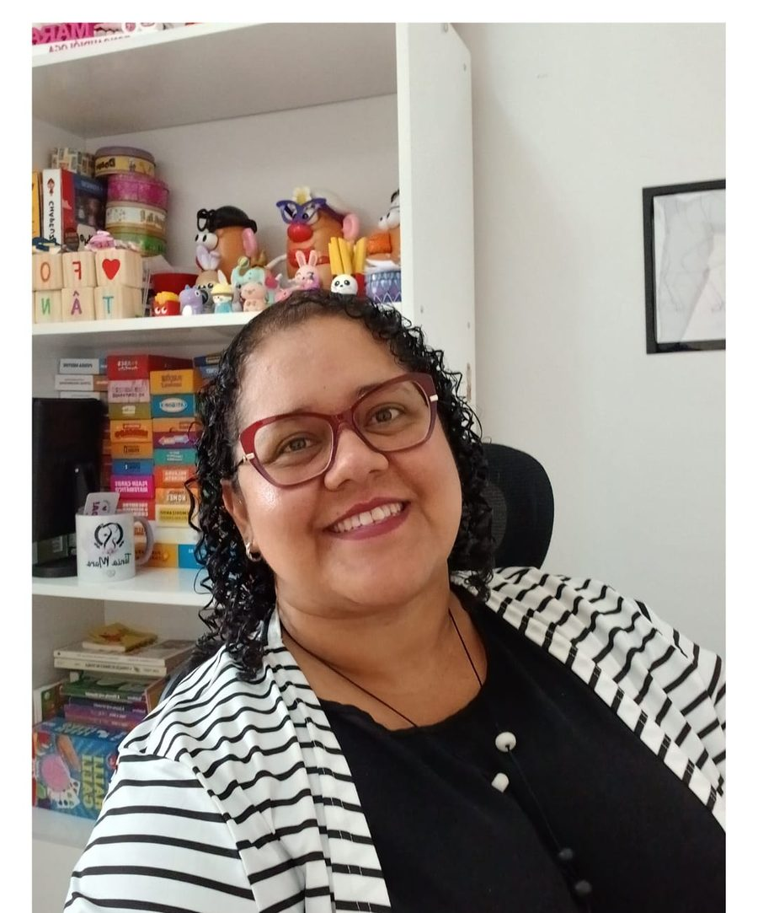

Fonoaudiologia & Psicopedagogia — São Paulo
Da fala ao sentimento,
um som de cada vez.
Atendo crianças e famílias em consciência fonológica, alfabetização fônica, processamento auditivo e transtorno de linguagem. O que uso em consultório é também o que ensino pra outras fonoaudiólogas nos meus cursos.

Acolher
com empatia
Comunicar
com propósito
Transformar
com conhecimento
Quem atende
Tânia Mara
fonoaudióloga & psicopedagogaSou fonoaudióloga (CRFa 2-20001) e psicopedagoga, com atuação clínica focada em consciência fonológica, alfabetização fônica, processamento auditivo central e transtorno de linguagem. Atendo em consultório em São Paulo, sempre com plano de intervenção construído caso a caso — nada de protocolo genérico repetido de paciente pra paciente.
Todo ano eu vou pro LINFALA, o maior encontro de fonoaudiologia do Brasil, pra trazer o que tem de mais atual em avaliação e intervenção pro consultório. E é o mesmo material que uso com os pacientes que viro conteúdo de curso — pra outras colegas não precisarem montar do zero o que eu já testei na prática.
Atendimento clínico
Serviços
Avaliação e terapia fonoaudiológica pra crianças, com orientação direta pra família acompanhar o processo em casa.
Avaliação fonoaudiológica
Triagem e diagnóstico de fala, linguagem e processamento auditivo, com devolutiva detalhada pra família.
Terapia da fala
Atendimento individual pra trocas de fonemas, gagueira e dificuldades na leitura e na escrita.
Psicopedagogia clínica
Acompanhamento pra dificuldades de aprendizagem, com foco em alfabetização e consolidação da rota fonológica.
Orientação a pais e escola
Devolutivas e ajustes práticos pra apoiar a criança fora do consultório, em casa e em sala de aula.
O que dizem
Depoimentos
Substitua pelos relatos reais das famílias e colegas que você atende — três já bastam pra dar credibilidade.
Em três meses meu filho parou de trocar o /r/ em quase toda palavra. A gente via a diferença semana a semana, não só no fim.
Nome da mãe/pai
Paciente de 7 anos
Fiz a Imersão LEIA e mudei a forma como planejo alfabetização. Voltei pro consultório aplicando na semana seguinte.
Nome da colega
Fonoaudióloga, aluna da Imersão LEIA
A devolutiva foi clara o suficiente pra eu explicar pra escola exatamente o que meu filho precisava.
Nome do responsável
Paciente de 9 anos
Formação para fonoaudiólogas
Cursos e materiais
O que eu testo em consultório, organizado pra outras colegas aplicarem direto na clínica.
Imersão LEIA
Fonemas que Alfabetizam: fonética, fonologia e métodos fônicos aplicados direto na prática clínica, com Tacianne Mingotti Carpen.
Consulte as próximas turmas
Saber maisPAC na Prática Clínica
Processamento auditivo central com aplicação direta em consultório — 2ª turma, com Tacianne Mingotti Carpen.
Consulte vagas abertas
Saber maisFonemas na Prática
Três ferramentas prontas pra usar na sessão: aquisição dos sons por idade, mapa dos fonemas e lista de pares mínimos.
R$ 29,90
Comprar no KiwifyVamos conversar
Me chama pra marcar uma avaliação ou tirar dúvida sobre os cursos. Respondo pelo WhatsApp e pelo Instagram.
Atendimento
Consultório em São Paulo — SP. Horários combinados por WhatsApp, de segunda a sexta.
Cursos e materiais
Turmas e e-books divulgados primeiro pra quem segue @taniamarafono no Instagram.
Registro profissional
Fonoaudióloga CRFa 2-20001. Atendimento sob sigilo profissional, conforme código de ética da categoria.